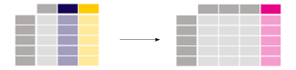
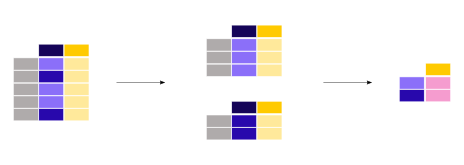
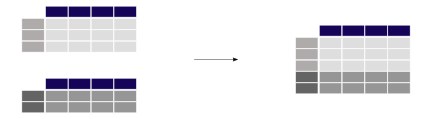

Getting started#
Installation#
pandas can be installed via conda from conda-forge.
pandas can be installed via pip from PyPI.
Installing a specific version? Installing from source? Check the advanced installation page.
Intro to pandas#
When working with tabular data, such as data stored in spreadsheets or databases, pandas is the right tool for you. pandas will help you
to explore, clean, and process your data. In pandas, a data table is called a DataFrame.

pandas supports the integration with many file formats or data sources out of the box (csv, excel, sql, json, parquet,…). The ability to import data from each of these
data sources is provided by functions with the prefix, read_*. Similarly, the to_* methods are used to store data.

Selecting or filtering specific rows and/or columns? Filtering the data on a particular condition? Methods for slicing, selecting, and extracting the data you need are available in pandas.
pandas provides plotting for your data right out of the box with the power of Matplotlib. Simply pick the plot type (scatter, bar, boxplot,…) corresponding to your data.

There’s no need to loop over all rows of your data table to do calculations. Column data manipulations work elementwise in pandas.
Adding a column to a DataFrame based on existing data in other columns is straightforward.

Basic statistics (mean, median, min, max, counts…) are easily calculable across data frames. These, or even custom aggregations, can be applied on the entire data set, a sliding window of the data, or grouped by categories. The latter is also known as the split-apply-combine approach.

Multiple tables can be concatenated column wise or row wise with pandas’ database-like join and merge operations.

pandas has great support for time series and has an extensive set of tools for working with dates, times, and time-indexed data.
Data sets often contain more than just numerical data. pandas provides a wide range of functions to clean textual data and extract useful information from it.
Coming from…#
Are you familiar with other software for manipulating tabular data? Learn the pandas-equivalent operations compared to software you already know:
The R programming language provides a
data.frame data structure as well as packages like
tidyverse which use and extend data.frame
for convenient data handling functionalities similar to pandas.
Already familiar with SELECT, GROUP BY, JOIN, etc.?
Many SQL manipulations have equivalents in pandas.
The data set included in the STATA
statistical software suite corresponds to the pandas DataFrame.
Many of the operations known from STATA have an equivalent in pandas.
Users of Excel or other spreadsheet programs will find that many of the concepts are transferable to pandas.
SAS, the statistical software suite,
uses the data set structure, which closely corresponds pandas’ DataFrame.
Also SAS vectorized operations such as filtering or string processing operations
have similar functions in pandas.
Tutorials#
For a quick overview of pandas functionality, see 10 Minutes to pandas.
You can also reference the pandas cheat sheet for a succinct guide for manipulating data with pandas.
The community produces a wide variety of tutorials available online. Some of the material is enlisted in the community contributed Community tutorials.